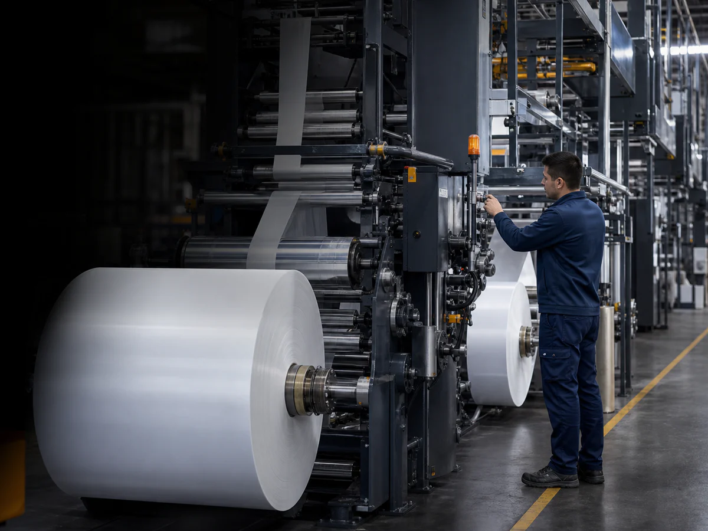

01SEKTÖR BAĞLAMI
Ambalaj
Bobinden sevkiyata uzanan çok aşamalı üretimde malzeme, metraj, fire ve parti izinin aynı akışta tutulması.
- Bobin ve metraj
- Baskı–laminasyon
- Fire ve parti izi
Fabrikanızın her halkasını daha verimli, daha kontrollü, daha kârlı hale getirin.
WinPremium ERP siparişi, stoku, planı, maliyeti ve sevkiyatı aynı iş akışında birleştirir. BSS Automation sahadaki gerçeği sisteme taşır — karar vermek için vardiya sonunu beklemezsiniz.
SENARYOLAR
{{ fs.body }}
Bu akış ambalaj üretiminin gerçek süreç mantığıyla hazırlanmıştır. Diğer sektör akışları da kendi üretim gerçeklikleri doğrulandıktan sonra ayrı ayrı derinleştirilecektir.
ÇÖZÜM HARİTASI
Her çözüm alanı, yaşadığınız problemi doğru bağlamda tanımlar ve gereken teknoloji katmanını gösterir. Bir karta girin; sistemin o başlıkta ne yaptığını görün.
WİNPREMİUM OPERASYON ZEKÂSI
Dört canlı görünüm; ürün tanımından makineye, sevkiyattan gerçek kârlılığa uzanan aynı üretim gerçeğini gösterir.
{{ s.index }}{{ s.label }}
{{ s.body }}
{{ s.outcome }}
Aynı veri, dört ayrı ekran değil; aynı üretim gerçeğinin dört karar anı.